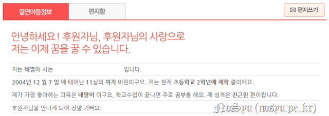
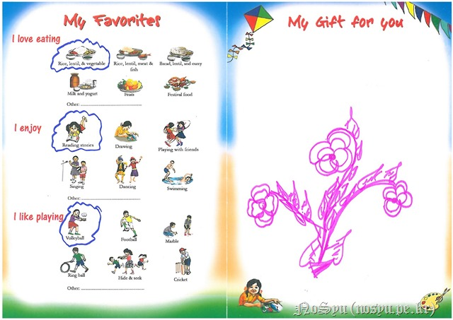
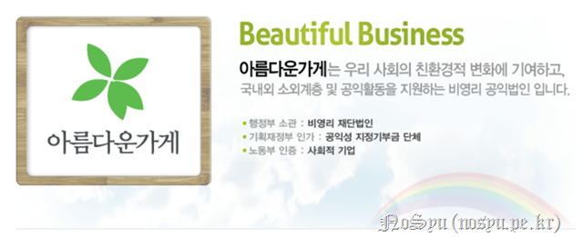
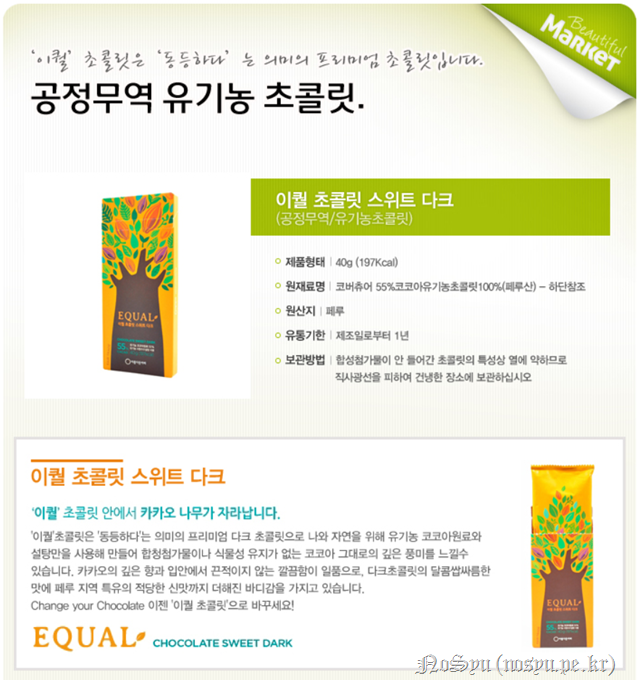
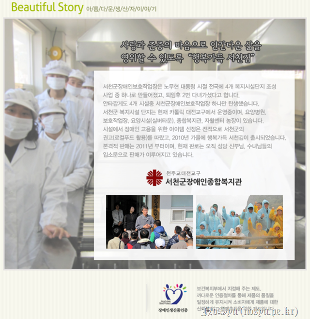

언제나처럼 생일은 다가오는구나. 생일이란 축하를 해주고 받아야 하는 것인지 언제나 의문스럽지만, 받는 것을 좋아하는 사람들이 있으니 해주는 것은 맞는 것 같다는 생각이구나.
작년에 기부 활동, 변화가 없더구나. 여전히 국내후원 10,000원, 해외결연후원 30,000원.
다만, 큰 변화는 있었기는 했지. 해외결연후원을 받는다는 아동이 바뀌었으니까 말이야.

작년에 도와주던 친구는 네팔에 있던 대지진 이후 세이브더칠드런이 후원을 해주는 지역을 벗어나서 이사를 하였다고 하는구나. 처음에는 그렇구나라며 생각했으나, 지금 생각해보니 은유적 표현인 것 같기도 해서 참으로 안타까울 따름이야. 대신 다른 친구를 후원해주고 있으니 그 친구는 좋은 일이 있기를 바랄 뿐이란다.

이러한 편지를 나에게 보내줬다고 하는구나. 주소는 집으로 되어 있어 직접 받지 못했더니 그렇게 까먹고 말았네.
올해는 전과는 다르게 한 번 해보았단다.

바로 아름다운가게란다. 여긴 너가 대학교 신입생이던 2004년에 봉사활동을 하였던 곳이지. 여기서 파는 물건의 수익금을 어려운 이웃을 도와준다고 하지. 그래서 너가 필요한 그리고 선물 줄만한 것들을 여기서 구입하기로 했단다.
다 먹을 것들 뿐이구나. 평소에 먹을 견과류와 초콜릿 그리고 생일 기념으로 떠나는 여행지에서 줄 선물인 김까지…
난 개인적으로 해당 상품들 자체에 대해서도 좋아졌어.

http://www.beautifulmarket.org/shop/board/view.php?id=story&no=5
견과류의 경우 여러 장애인들이 근무하는 곳에서 나온 상품이라고 하는구나.

초콜릿은 공정무역으로 가져온 것이라고 하는구나.

김도 역시 장애인복지관에서 생산된 것이라고 하는구나.
이처럼 판매장에서의 수익금뿐만 아니라 생산자의 수익금 역시 어려운 사람들을 도와줄 수 있다는 점이 큰 매력이더구나.
여하튼, 다시 한 번 생일을 축하한다.
축하해주는 사람이 없는 생일에 혼자 떠나는 여행, 그 속에서 여러 경험과 생각과 평화를 얻기를 바랄 뿐이란다.